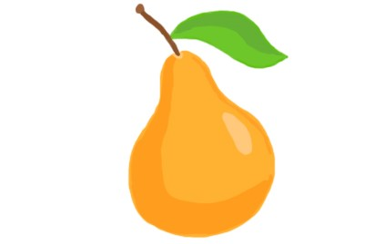

Плоди мінливі за формою (1,5-4 см завдовжки, 1,5-2 см завширшки), зелені або жовтуваті. Насіння видовжене, з загостреною основою ї заокругленою вершиною. Росте в другому ярусі деревостанів листяних і мішаних лісів, на галявинах, узліссях. Тіньовитривала, солевитривала, зимостійка рослина. Цвіте у квітні, травні, плоди достигають у вересні, жовтні.